富山に行ってきたよ。
以前訪れた珍寺を再訪したり（これを業界用語では珍寺パトロールというのだ！）、面白い本屋さんに行ったり、キトキトの寿司食ったり、さらにキトキトの寿司食ったり、ついでにキトキトの刺身も食ったり、と重要ミッションが目白押しだったのだが、最大のお目当てはこちらの観音堂を訪問すること。
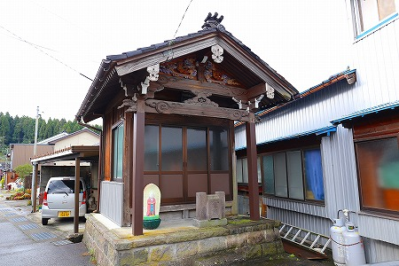
オイオイ、富山まで行って最大のお目当てがこの小さいお堂ってなんだよ。お前アタマおかしいのか？
…とご心配の御仁もいらっしゃるかもしれないが、小生のアタマの具合は小生が一番良く判ってますのでお構いなく。
イイ感じにぶっ壊れてますが、ぶっ壊れ具合としては悪くないのでこのまま放置しておく所存にございます。
で、富山市郊外にあるこの観音堂。
静かな街の辻にぽつんと建っている。
気になるのはこのお地蔵さん。
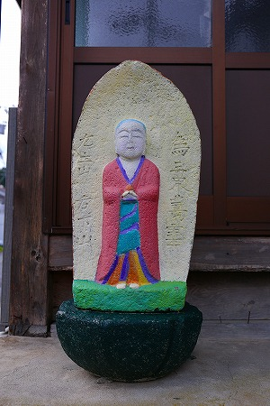
色鮮やかな化粧地蔵である。
化粧地蔵といえば当サイトでは青森県や京都府の事例を報告してきたが、富山県下にも化粧地蔵があるんだねぇ。
チョット意外な感じもするが、地蔵をペイントする習俗は日本海を行き来する北前船によって京都から北へ北へと伝播していったという。その経緯を考えれば、北前船が寄港していた富山市にその習俗があっても不思議ではない。
ちなみに富山市は古くから北前船で運ばれてきた昆布に慣れ親しんでおり、現在でも昆布の消費額が日本一なのだという（総務省調べ）。
とはいえ一般的に富山市内で化粧地蔵はほとんど存在しないのだが。
塗り潰されて、字は見難くなっているが、「為三界萬霊」「左立山 右下山」とある。
かつては立山登山の街道だったのだろうか。
今でも立山へと向かう富山地鉄が近くを走っているところを見ると立山信仰と深い関係がある土地と考えられる。
…というわけで観音堂である。
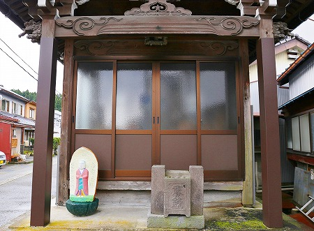
サッシの扉を開けさせていただく。
ジャーン！
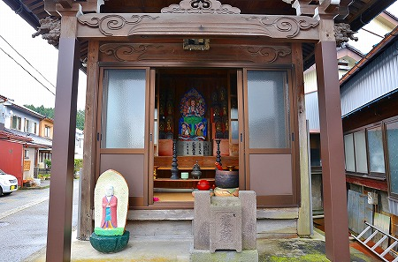
おおお、こちらが橋観音様ですか！
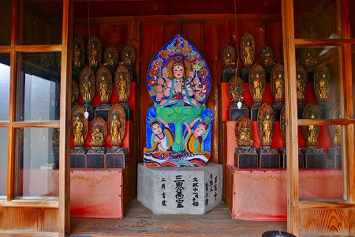
如何であろう、このど派手なペイントっぷり。
石像でこんなファンシーでファンキーでビューティフルな観音像があっただろうか？
台座には文政十一戊子拾二月とある。
つまり今から200年ほど前、北斎が富嶽三十六景を製作していた頃ですよ。
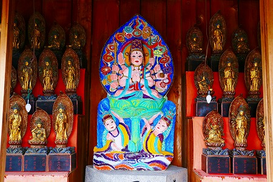
にしてもどうですか、このポップっぷり。
200年前に作られたとは思えない程、ヴィヴィッドなカラーで着彩されている。
左右には三十三観音像が並び、まるで紅白歌合戦のステージのようではないか！素敵すぎるぞ！
恐らく近年塗られたのだろう。
私はこの観音像がなぜこのように派手にペイントされたのか、その経緯を知らない。
京都の化粧地蔵の習俗が伝わったという説を唱えればそれなりの説得力もあるだろう。
富山中の石像がこのようにペイントされているのなら、それで説明がつくだろう。
しかし繰り返すが、富山県内の石造の大多数がペイントされているか、といえば全然そんなことはないのだ。
…という訳で、もやもやしつつ、その近所をドライブしていたら偶々発見した祠。
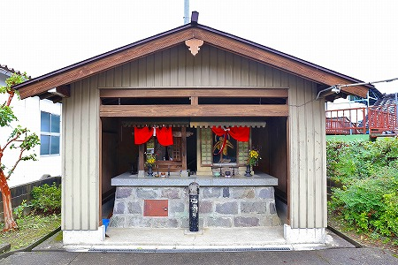
ふたつの祠が並んで建っている。
左側は普通のお地蔵さん。
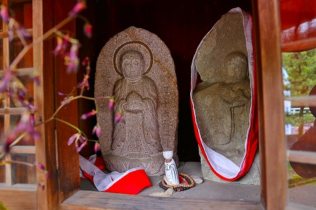
ちなみに富山では石仏にタスキのような布を掛けるのがスタンダードスタイルである。
で、問題なのが右側の祠にあった石仏。
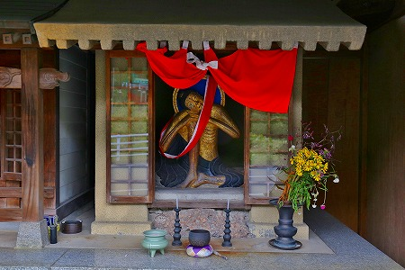
ガリ痩せな仏様が安置されていた。
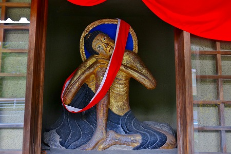
これはやせ仏といい、五劫思惟像の一種だとか。
私が尊敬する仏像探偵の本田不二雄氏の名著「ミステリーな仏像」によれば、やせ仏信仰は真宗王国であるこの富山に集中しているそうな。
という事は、この金色にペイントされたやせ仏像は浄土真宗が栄え、なおかつ化粧地蔵の習俗が伝わったこの富山の地で偶々出来上がったものなのだろうか。
物凄い低い確率の末に生まれた偶然の産物なのかもしれない。
そう考えると、ドキドキしちゃいますな。あ、そうでもない？失礼しました！
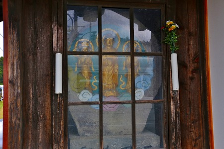
更に少し離れた場所にはペイントされた三尊像があった。
お地蔵サマだけをペイントするなら兎も角、それ以外の石仏も塗っているとなると、最早京都の化粧地蔵の習俗とは別モノと考えた方がいいのだろうか？
ひょっとして、この地方には何やら別の理由で石仏を塗る、という習俗が栄えているのだろうか？
今回、小ネタでしかも判らないことだらけで恐縮だが、喉に刺さった魚の小骨のように気になって仕方ない案件なのです。
…詳しい事をご存知の方、教えてくださいませっ！！！